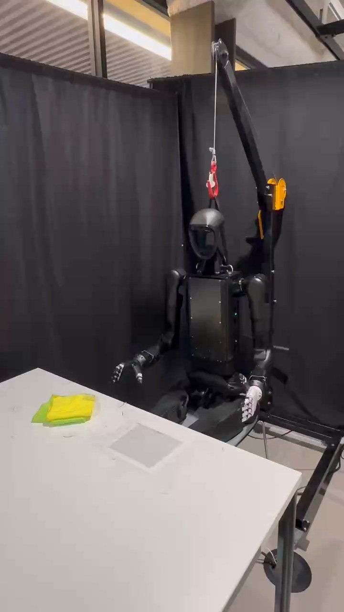

Humanoid Everyday · tool-use-6__wipe_table_with_cloth
Wipe table with cloth

Visual review action_review.json
{
"prompt_protocol": "humanoid_action_v1",
"prompt_provenance": "visually_authored_from_video_and_initial_frame",
"reviewed_contact_sheets": [
"sheet_001.jpg",
"sheet_002.jpg",
"sheet_003.jpg"
],
"inspected_frame_stride": 2,
"inspected_sampled_frame_count": 166,
"initial_scene": "Frontal oblique third-person view of a seated humanoid facing a white tabletop. A folded yellow cloth rests on a green flexible layer near the robot-relative right side of the work area. Both empty hands are beside the torso, with the right hand at image left. No person participates.",
"observed_sequence": [
{
"start_frame": 0,
"end_frame": 44,
"action": "The anatomical right arm extends toward the folded yellow cloth, bringing the hand above it; left hand stays by the left thigh.",
"confidence": "high"
},
{
"start_frame": 45,
"end_frame": 108,
"action": "Right hand lowers onto the top of the yellow cloth, closes/curls the fingers, and holds the cloth against the tabletop. Cloth remains supported on the table; there is no visible pickup.",
"confidence": "high"
},
{
"start_frame": 109,
"end_frame": 128,
"action": "Right arm bends inward, sliding the yellow cloth and underlying green layer toward image right and closer to the robot center. A dark rectangular tabletop patch formerly covered by the cloth is exposed.",
"confidence": "high"
},
{
"start_frame": 129,
"end_frame": 158,
"action": "Right hand maintains contact and downward pressure at the inward end of the first wipe; cloth remains on the tabletop.",
"confidence": "high"
},
{
"start_frame": 159,
"end_frame": 190,
"action": "Right arm extends outward, sliding the yellow/green stack back toward image left across the same tabletop area.",
"confidence": "high"
},
{
"start_frame": 191,
"end_frame": 210,
"action": "The right hand pauses in contact at the outward end of the wipe; the left hand remains uninvolved.",
"confidence": "high"
},
{
"start_frame": 211,
"end_frame": 252,
"action": "Right arm draws inward again, moving the cloth back toward its original vicinity over the dark patch.",
"confidence": "high"
},
{
"start_frame": 253,
"end_frame": 272,
"action": "Right fingers open and the hand rises clear of the cloth. The folded yellow cloth and green layer settle and remain on the tabletop.",
"confidence": "high"
},
{
"start_frame": 273,
"end_frame": 330,
"action": "The empty right arm retracts beside the torso. Both cloth layers remain on the table in the final frame; left hand stays by the thigh throughout.",
"confidence": "high"
}
],
"arm_hand_roles": {
"right": "Active manipulation hand: presses on the top cloth, maintains table contact while sliding it and the underlying green layer inward/outward/inward, then opens, lifts away and retracts without carrying the cloth.",
"left": "Idle open hand held beside the left thigh; does not touch, support, stabilize or transfer the cloth.",
"coordination": "Single-hand wiping task; no bimanual support, transfer, human interaction or locomotion."
},
"anatomical_side_evidence": {
"convention": "The face/front torso panel face the camera. The active image-left arm is visibly attached to the robot right shoulder; the inactive image-right arm attaches to the left shoulder. Both shoulder-to-elbow-to-wrist chains are visible in the source initial PNG and native transition frames.",
"active_anatomical_side": "right",
"confidence": "high",
"uncertainty": null
},
"terminal_state": "At frame 330 the folded yellow cloth and green layer rest on the tabletop near their starting area; the right hand is empty and withdrawn beside the body, with no continuing cloth contact. The left hand remains by the thigh. Back-and-forth wiping is completed, but cleanliness or removal of dirt is not established.",
"uncertainties": [
"The exact material and identity of the underlying green layer and the dark rectangular tabletop patch cannot be determined visually. Their shared sliding motion and table support are clear.",
"The clip establishes wiping motion but does not establish that the tabletop became clean; no measurable dirt-removal outcome is visible.",
"Phase boundaries are approximate to the stride-2 observations; native details verify contact, displacement, withdrawal and final state."
],
"annotation_discrepancies": [
"The source annotation describes systematic coverage patterns and effective cleaning techniques. The observed motion wipes a limited region back and forth; systematic coverage or cleaning efficacy cannot be verified from this clip."
],
"evidence_frame_indices": [
0,
44,
54,
100,
126,
156,
180,
204,
238,
260,
272,
330
],
"selected_execution_status": "success",
"selected_execution_status_basis": "The visible wiping manipulation completes with hand withdrawal and cloth left on the table; success refers to this observed action, not confirmed cleanliness.",
"inspection_coverage": {
"complete_video_sampled": true,
"sampled_frames": "0, 2, 4, ..., 330",
"total_decoded_source_frames": 331,
"native_source_initial_png_inspected": true,
"native_transition_and_final_frames": [
44,
54,
100,
126,
156,
180,
204,
238,
260,
272,
330
],
"all_returned_contact_sheets_visually_viewed": true
},
"video_id": "tool-use-6",
"dataset": "Humanoid_Everyday",
"dedicated_review_agent": "review_he_tool_use_6",
"review_source_video": "Humanoid_Everyday/tool-use-6__wipe_table_with_cloth/third_person/original/original.mp4",
"source_frame_count": 331,
"source_fps": 29.71719287745025,
"native_detail_frames": [
44,
54,
100,
126,
156,
180,
204,
238,
260,
272,
330
],
"world_model_prompt": "The humanoid presses its right hand onto the folded yellow cloth and slides it together with the green layer beneath it across the tabletop in a back-and-forth wiping motion. It then lifts its right hand clear and retracts the arm, leaving the cloth resting on the table. Keep the camera fixed; preserve robot geometry, physically valid joint motion, and normal gripper opening and closing.",
"original_task_instruction": "This task demonstrates cloth-based cleaning where the humanoid robot uses a cloth to wipe a table surface, requiring proper wiping motions, systematic coverage patterns, and effective cleaning techniques.",
"selected_segment": {
"start_frame": 0,
"end_frame_exclusive": 331,
"reason": "Complete original single-task reference; no cropping or trimming requested."
},
"source_video_sha256": "800cf16a5fe55364df4f9d8e294a7f772a5ad2b0228c51ef814cad0dba46ca17",
"review_completed_at": "2026-10-13T16:59:09.392305+00:00"
}